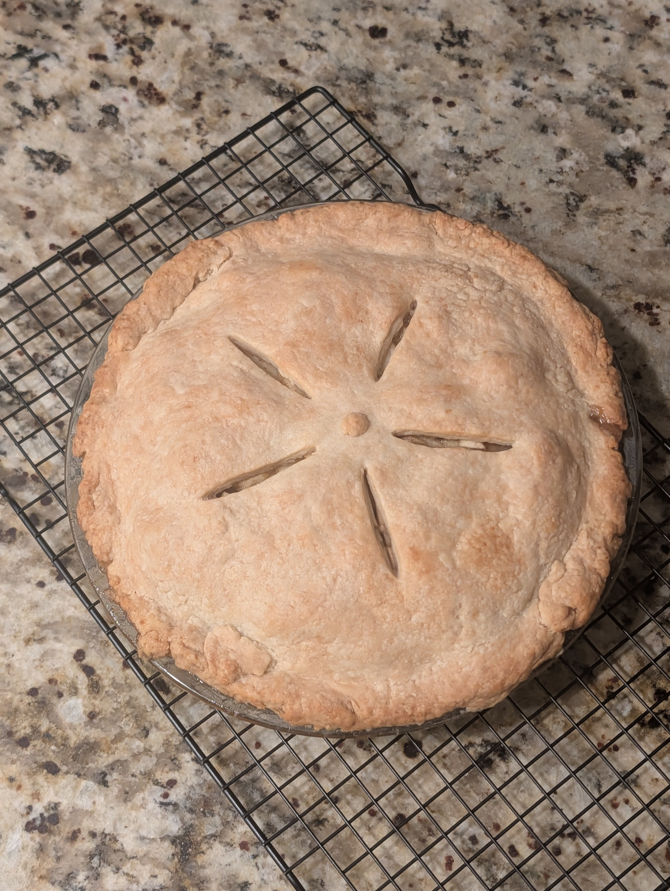
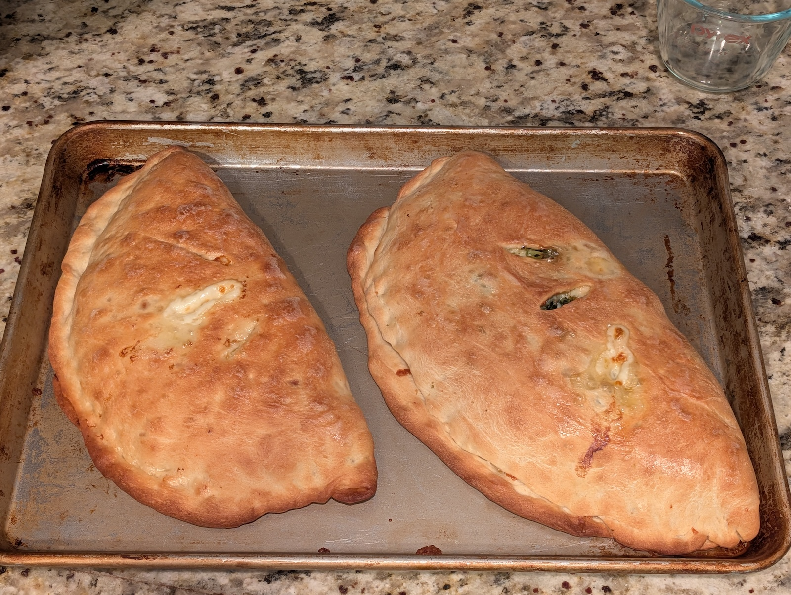
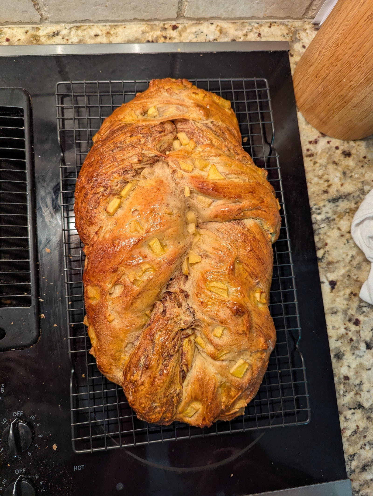

The Lab · Agents & Agency
I write essays about AI and work. Then I build things to check my own math.
Writing about AI is easy. Building with it and seeing what holds up is more honest. Some of what's here is shipped and in daily use; most of it is prototype. Every exhibit says which, right under its title.
AI does the task
Automation. The worker moves on, up, or out. Measured to death.
AI helps with the task
Augmentation. The worker produces more. Everyone's current favorite.
AI makes new tasks possible
Work nobody could do at any price before. Barely counted. The Lab mostly lives here.
The AI Diffusion Atlas
Status: working prototype · every figure real and sourced · the tool itself unauditedWho is actually adopting AI in America: businesses, workers, and states, built entirely on published data from the Census Bureau, the Federal Reserve, and the Anthropic Economic Index. The two adoption numbers everyone quotes (18% of firms, 41% of workers) are both right. Understanding why is the whole game.
The Legacy Project
Status: shipped · in production at the Ewing Marion Kauffman FoundationSixty years of foundation history was sitting in boxes, binders, and file shares that nobody could search. I led 46 volunteers in digitizing it, then helped design an AI research tool integrated with our grant-management software, so the archive answers questions instead of gathering dust.
Staff use it to pull institutional context in seconds: what we funded, what we learned, what we already tried in 1997. Information retrieval that took days now takes minutes, and the tool opened working capacity and possibilities for staff that didn't exist before.
It's also the project that convinced me the "Expertise Encoder" role in Exhibit D isn't hypothetical. I've effectively done the job. It's hard, and it matters.
The Expertise Flow Simulator
Status: prototype · verification pending · a toy model, on purposeMy essay The Liquidity Crisis of Expertise makes a claim: a profession can run out of usable judgment the way a bank runs out of cash. Solvent on paper, illiquid in the moment that counts. This is that claim as a machine you can argue with. Three sliders, one profession, 25 years. See what breaks.
How fast the profession hands cognitive work to models. Speeds up encoding; quietly starves the junior pipeline.
Deliberate spending on the slow way: juniors doing hard things next to seniors.
How much of a retiring expert's judgment actually survives capture. Less than you'd hope.
How it works, in one breath. Three stocks: judgment held by working seniors, judgment captured into systems, and the junior pipeline. Retirement drains the first at 5% a year; encoding takes about a decade to mature; your sliders control the rest. Toys make assumptions visible. If you'd set a coefficient differently, tell me which one and why.
Jobs that didn't exist in 2022
Status: prototype · verification pending · a running list, nominations welcomeNot old jobs with new tools, but work that wasn't possible before frontier models. Each entry says what the job is and why it couldn't exist earlier. Some have job postings today; some are one funding cycle away. Treat every entry as a hypothesis.
The Kitchen
Status: verified by consumption · replication ongoingI spend my working hours on human-AI collaboration, so it seems only fair to disclose my own. These were made by me, with AI as sous-chef for recipes, ratios, and troubleshooting. Peer review was conducted by my family, whose standards are frankly higher than most journals'.



Findings to date: AI is a good cooking partner. Patient with dumb questions, unbothered at 10 p.m., wrong about oven temperatures roughly once per project. Also in the rotation: stews and a cheesecake. Methodology shared on request.
This website
Status: live · you're soaking in itThe site you're reading is itself a Lab project: written and built with Claude Fable 5, then argued with until it sounded like me. Two hands, one model, no web framework, no hosting bill. A few files of plain HTML, which is either charmingly analog or aggressively stubborn, depending on your view.
On deck
-
In development
The Translation Bench
One research finding, rendered faithfully for five audiences: the scholar, the legislator, the founder, the journalist, the neighbor. Translation as infrastructure. The thing I've done by hand for twenty years, prototyped as a tool.
-
Sketching
The Apprenticeship Protocol
A designed loop where a junior, a senior, and a model make each other better, instead of the model quietly replacing the middle. The fix the simulator upstairs keeps asking for.